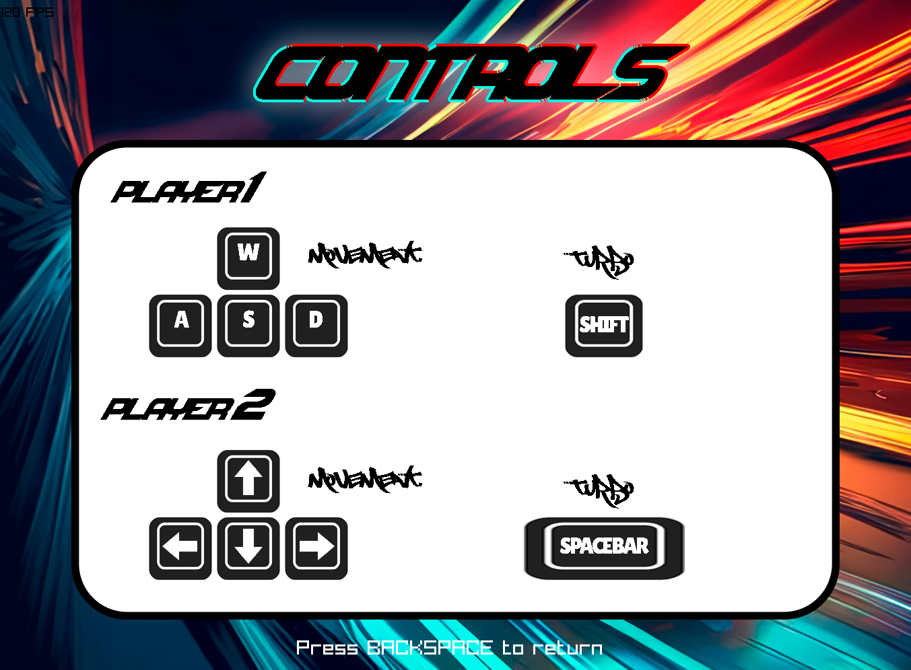
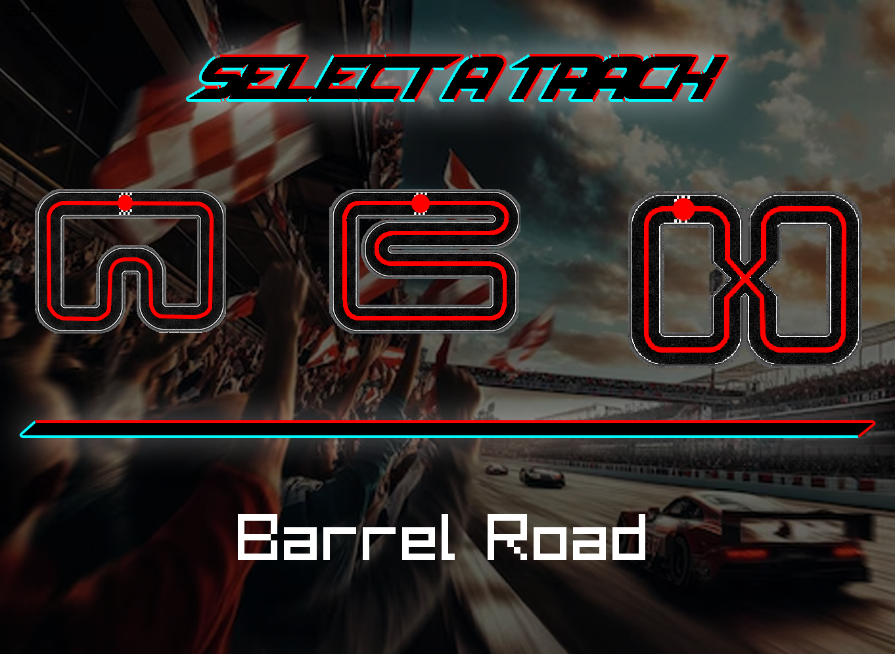
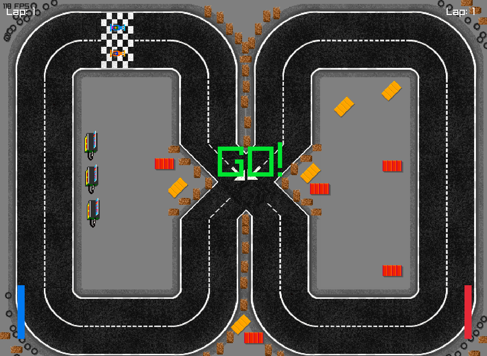
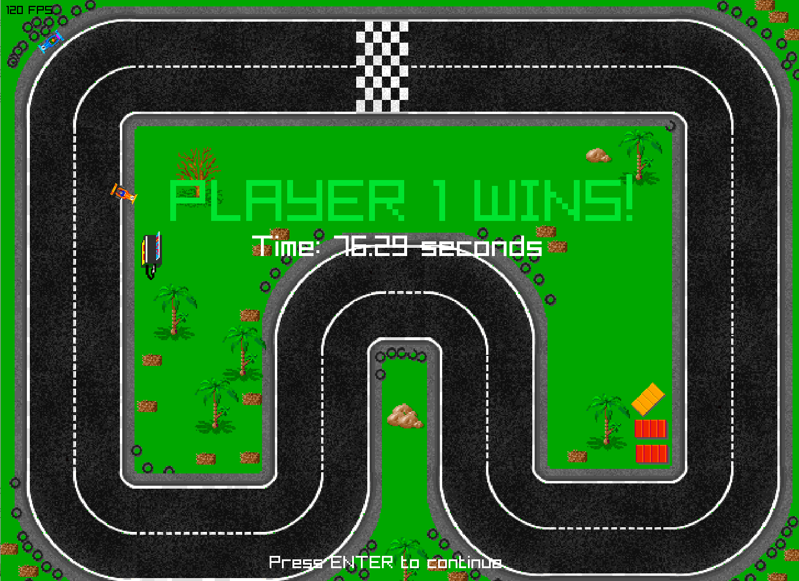

Need For Beer es un videojuego de carreras de 1 o 2 Jugadores con énfasis en la simulación física del movimiento del vehículo. Fue desarrollado en colaboración en un repositorio GitHub junto a compañeros, como parte de un estudio de mecánicas de física aplicada en videojuegos.
Características principales
- Simulación física del vehículo (fuerzas, fricción, colisiones)
- Circuitos dinámicos y mecánicas de choque y rebote
- Controles de teclado personalizados, sistema de turbo y frenado avanzado
En este proyecto, mi papel principal fue diseñar e implementar los sistemas de vueltas, además de la integración del sistema de turbo, toda la UI y arte principal. También colaboré en la estructuración del repositorio GitHub y en la optimización para mantener rendimiento estable.